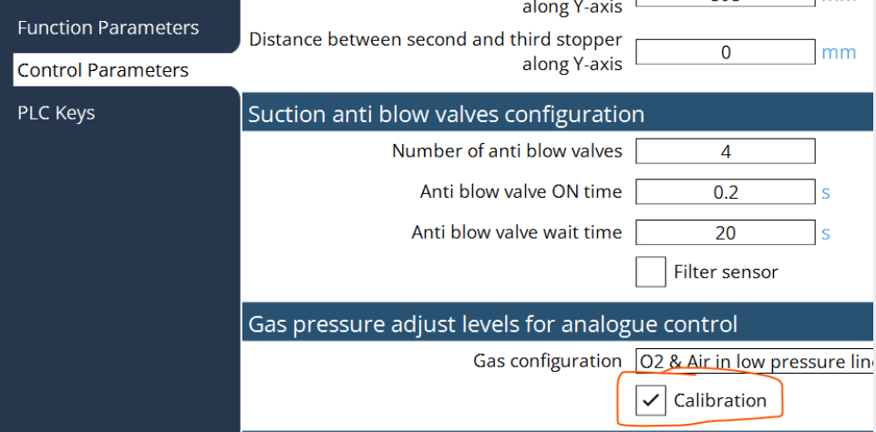
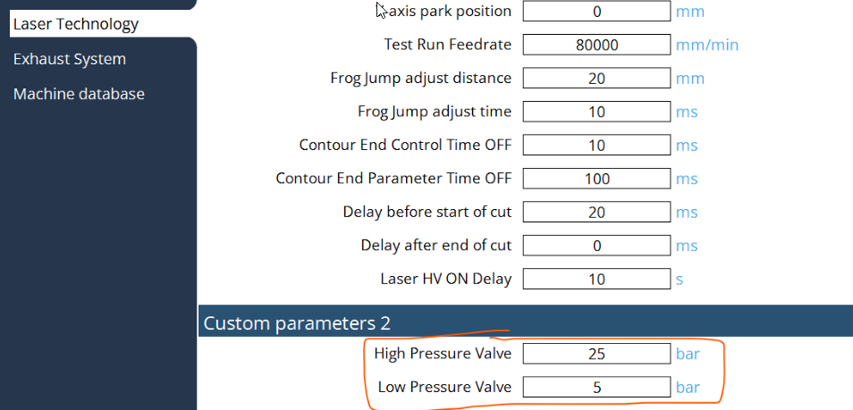
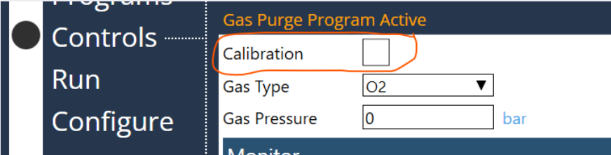
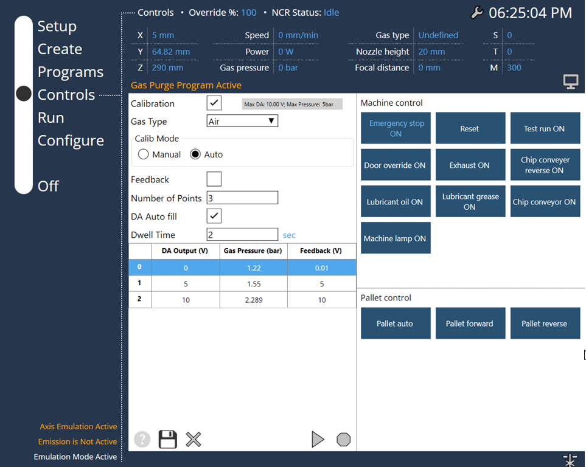

Analog gas calibration
If you want to use a proportional valve with analog DC 0-10v control for air pressure, you need to use air pressure calibration where the proportional valve air pressure feedback is a DC Voltage.
Steps to follow:
-
Gas Configuration: Select the gas config of the machine as follows:
-
Select the calibration for the analogue control of pressure valve:

-
Check the values of High Pressure & Low pressure valves.

-
Select the Gas Purge program, if the calibration is activated in the PLC options, then the Calibration option will be displayed in this program:

-
When the calibration is selected, the table will be displayed as follows:

Important points of the Calibration screen:
-
The calibration table will be stored for each gas type.
-
Max pressure value was displayed depends on the Gas configuration and Pressure values entered in "Custom Parameters 2".
-
Calib Mode: Manual → Press start button for next output, Auto → For defined delay will output the next value
-
If Feedback is selected, then the Valve feedback is saved for the monitoring of the gas pressure, else will save the set value no monitoring)
-
DA Auto fill → will fill the DA output depends on the number of calibration points.
-
When the calibration is started, enter the gas pressure in the pop-up window for each output value.
-
Can start the calibration from the selected index also.